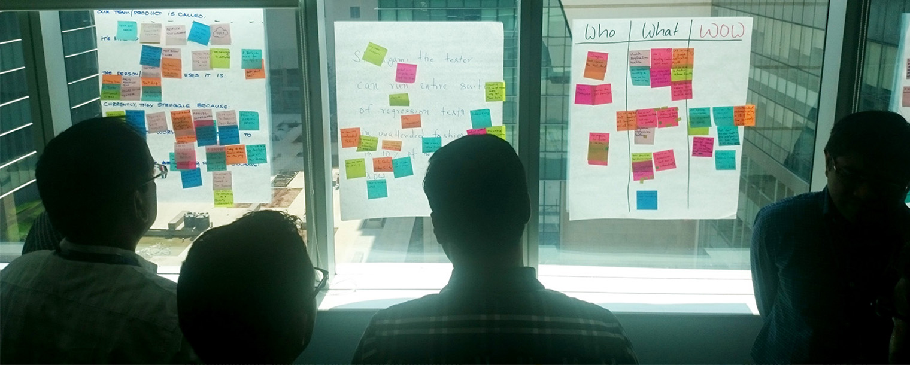
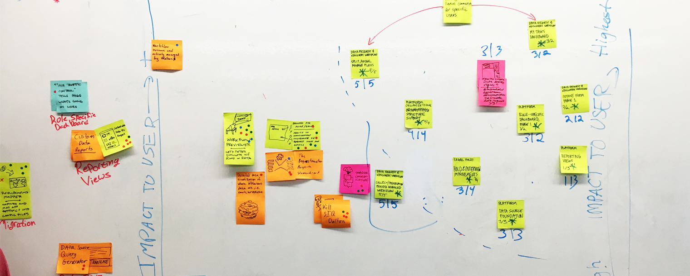
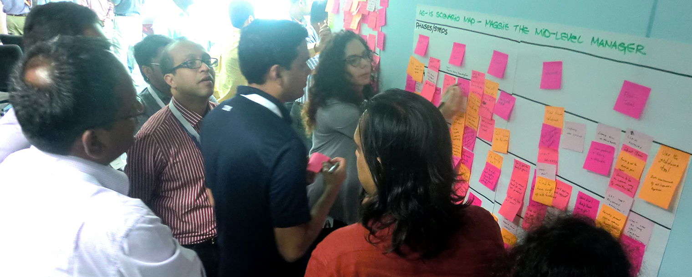
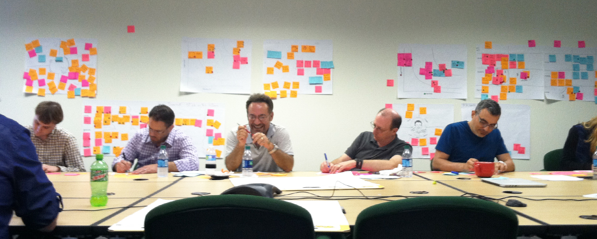
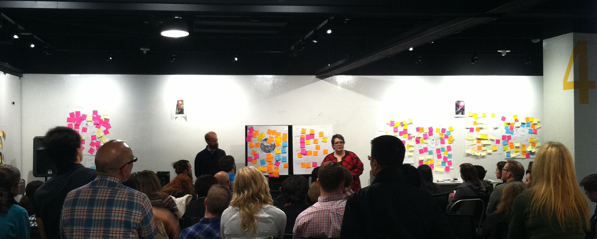

UX Facilitation and Workshops
Background/Overview:
Contemporary design sits at a crosspoint of tension and responsibility: at what point are we users or designers? When is our practice no longer an art but a method or science? Design is shifting in a way to be more inclusive and to address how technology, art, science, and people work together. Design is transformative because it has the ability to lead in any place where there is a problem.
I strongly believe that design is no longer just for designers. That is why I think it is extremely important to educate those around us. I've facilitated and lead dozens of workshops with clients, business leaders, and young designers.
 IBM Designcamps and Workshops
As a designer at IBM, part of the responsibility for making sure our business remains design-first is to educate our peers and leaders. I've traveled domestically and internationally to reach 100+ employees, business leaders, and clients. These engagements varry in their content - some are high level UX methods and design thinking, while others are nitty-gritty product definition workshops.
Design Your Space
I co-lead a 20+ person workshop to help researchers in Austin, TX and Toronto redesign their workspace. Problem? The employees felt like they weren't being served by their new space. Higher-ups were steamrolling the team into moving into an open concept work area that did not cater to their needs. The issues ranged from "I don't like it" to more urgent "I will not be able to work in this space because I have a disability."
Using generative research tools we were able to coach the research group on how to dig deep and articulate their problems while providing concrete solutions on how to improve the space while keeping elements to please those in favor of the open layout.
UXPA Workshop
I co-lead a 70+ person workshop to introduce non-UX designers into basic methods we use in our day to day. The workshop covered personas, journey maps (as-is/to-be scenarios) and ended with storyboarding possible solutions.